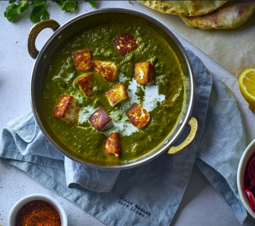

Palak Paneer
Palak Paneer is a classic North Indian dish made with fresh spinach
blended into a creamy gravy and cooked with soft paneer cubes.
It is nutritious, flavorful, and pairs perfectly with roti,
naan, or rice.
Ingredients
- 250g paneer, cut into cubes
- 3 cups fresh spinach leaves
- 1 onion, finely chopped
- 2 tomatoes, chopped
- 1 tbsp ginger-garlic paste
- 2 green chilies
- 2 tbsp oil or ghee
- ½ tsp cumin seeds
- ½ tsp turmeric powder
- 1 tsp garam masala
- 2 tbsp fresh cream
- Salt to taste
Instructions
- Wash the spinach thoroughly and blanch it in hot water for 2–3 minutes.
- Transfer it to cold water and blend into a smooth puree.
- Heat oil in a pan and lightly fry the paneer cubes until golden.
- In the same pan, add cumin seeds and sauté onions until translucent.
- Add ginger-garlic paste and green chilies. Cook for 1 minute.
- Add tomatoes and cook until soft.
- Mix in turmeric powder, garam masala, and salt.
- Add the spinach puree and simmer for 5–7 minutes.
- Add the fried paneer cubes and cook for another 5 minutes.
- Stir in fresh cream and serve hot.
Cooking Time
Preparation: 15 minutes
Cooking: 25 minutes
Total Time: 40 minutes
Serving Suggestion
Serve hot with butter naan, tandoori roti, chapati,
jeera rice, or steamed basmati rice.
← Back to Home